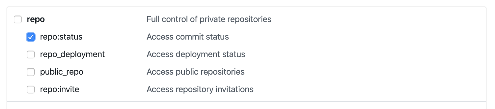
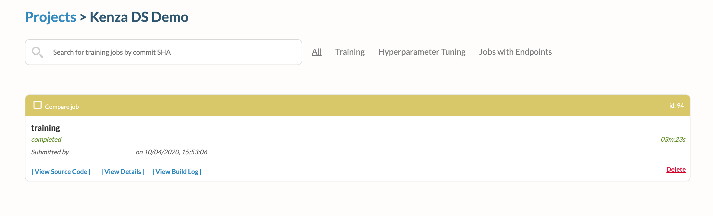
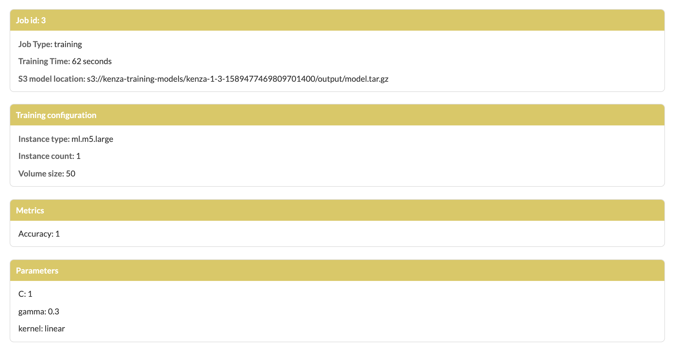

Kenza
Kenza is an open-source Machine Learning Platform.
More specifically, it is an open source cloud-native (moving from Docker Swarm to Kubernetes in 2020) system for Machine Learning Continuous Integration and Delivery (CD4ML) you can run in one command. It leverages containers and the cloud to provide basic mechanisms for training, tuning and deploying Machine Learning models.
What ML Engines does it support? - AWS SageMaker - More to be added soon
What does it provide to Data Scientists? - A web UI where you can track and compare your training and hyperparameter tuning jobs, and model deployments
How does a Data Scientist use it?
- It's very simple! You need to implement a train and predict functionality in Python, and define a YAML file. Example:
```
sagify:
train:
input_s3_dir: s3://sagify-0.13.1/iris.csv
output_s3_dir: s3://kenza-training-models
ec2_type: ml.m5.large
hyperparameters_file: hyperparams.json
volume_size: 50
timeout: 86400
deploy:
instances_count: 1
ec2_type: ml.t2.medium
endpoint: some-endpoint
```
Why a Machine Learning team should care? - Focus on Machine Learning, not ML Ops - Continuous and Reliable training, hyperparameter tuning and deployment - Version control of ML models - Shorter time to put a model in production - No need to spend months to change your current ML codebase to meet the needs of this ML platform - Integrates easily with existing software engineering best practices - Less resources invested on ML Infrastructure Engineers
Why a Machine Learning Infrastructure team should care? - Clean open-source ML Platform - Customize it as you wish - Shorter time to deliver - Easy to integrate with existing Engineering processes - Support of many ML Engines (at the moment only AWS SageMaker)
The best part is that you can continue using your favorite libraries!
Installation
Prerequisites
Prerequisites to install kenza
Install Kenza
Download the binary from the latest GitHub release:
# Linux
curl -L https://github.com/kenza-ai/kenza/releases/download/v0.0.1-alpha/kenza-linux-amd64 -o kenza
# macOS
curl -L https://github.com/kenza-ai/kenza/releases/download/v0.0.1-alpha/kenza-darwin-amd64 -o kenza
Move it under a PATH directory, we prefer /usr/local/bin:
chmod +x kenza
sudo mv ./kenza /usr/local/bin/kenza
Ensure you are on the expected version:
kenza info
You should see output similar to the following:
Kenza info
Version: v0.0.32
Built: 2019-12-09T18:57:05Z
Commit: 099415b5087d919d086b383da73afe1b99bf546f
Getting started for Data Scientists and ML Infrastructure Engineers
Start (or restart) Kenza by running:
kenza start
Note: The first run might take longer than subsequent runs due to the Docker images downloading for the first time.
Important: The directory from which the
kenzacommands are run from is significant.kenza startcreates akenzadirectory in the directory the command was run from. If you run the command again in a different directory, a newkenzadirectory will be created there, essentially a separatekenzainstallation.
After Kenza has started, navigate to http://localhost/#/signup to create an account and get started.
Now, you are ready to train your first ML model:
- Make sure
awscliis configured on your local machine and follow instructions here to set up an aws profile with access to SageMaker. - Docker running locally
- A local AWS profile with access to AWS SageMaker should be added to your local
awscliconfiguration. This resource can help you. - Create an S3 bucket on your AWS account
- Fork the
https://github.com/Kenza-AI/kenza-ds-demoonto your personal Github account - Clone the forked repo and
cd kenza-ds-demo. make create_environmentto create a virtualenvworkon kenza-ds-demoto activate the virtualenvmake requirementsto install dependenciessagify initto create the required scaffolding for Kenza- Type in
kenza-ds-demofor SageMaker app name,Nin questionAre you starting a new project?,srcfor questionType in the directory where your code lives, and make sure to choose Python 3 version. Then, choose your preferred AWS profile and region. Finally, typerequirements.txtin questionType in the path to requirements.txt. -
Replace the
TODOsin thetrain(...)function insrc/sagify_base/training/training.pyfile with:input_file_path = os.path.join(input_data_path, 'iris.data') clf, accuracy = training_logic(input_file_path=input_file_path, hyperparams_path=hyperparams_path) output_model_file_path = os.path.join(model_save_path, 'model.pkl') joblib.dump(clf, output_model_file_path) log_metric("Accuracy", accuracy)and at the top of the file, add:
import os from sagify.api.hyperparameter_tuning import log_metric from sklearn.externals import joblib from iris_training import train as training_logic -
Create in the root directory of the project a YAML file with name
.kenza.ymland the following content:sagify: train: input_s3_dir: s3://kenza-ds-demo/iris-data/iris.data output_s3_dir: s3://<your-own-bucket> hyperparameters_file: hyperparameters.json ec2_type: ml.m5.large volume_size: 50 timeout: 86400 metrics: Accuracy -
Commit and push changes to master branch
- Make sure you have created an account on
http://localhost/#/signupand log in onhttp://localhost/ - You should see a button prompting you to create your first Kenza project. Click on it.
- Now it's time to populate the fields:
- Go to
https://github.com/settings/tokensand click onrepo:status. This will give the ability to Kenza to have read access to this repo. Create the token and copy it.  - Paste it on the access token field on Kenza
- Git ref regex should take the value
refs/heads/master. This field denotes to which branches or tags to listen to. In this cases, we listen to changes only on master branch. - Repository clone url should be the url of the forked repo under your github account. Example:
https://github.com/pm3310/kenza-ds-demo - The name of the project can be
Kenza DS Demo - The description field is optional. Leave it blank for now.
- Click on
Create! Voilà! Your first Kenza project is created! You should be landed on Kenza's page of projects.
- Go to
- Click on the
runbutton on the bottom right corner of the newly created project. This will trigger Kenza to go and find the latest commit on master branch, grab the code and execute training. - Click on the arrow on the created project to see the list of jobs. You'll see something like that: 
- Click on the id of the training on the top right corner and you'll find the configuration of the training job, input data path, model output path, accuracy metrics and many more! 
Checking current service status
You can check the status of Kenza and its services with:
kenza status
If the output feels familiar, it's because Kenza is deployed as a Docker stack. Running
docker stack ps kenzawould generate the same output.
Scaling up
Kenza runs "one job per worker"; workers are ephemeral in nature and only handle one job before closing down. To run more than one jobs in parallel, simply add more workers:
kenza scale worker=5
Note: Kenza workers do not need nearly as many resources as one may think (due to the nature of ML jobs) because the actual training takes place on the cloud. Kenza workers only clone the repos, prepare the job commands to be run and report on the status of the jobs as they progress through time.
Cleaning up
You can stop Kenza with:
kenza stop
Updating Kenza
To update to the latest available version, run:
kenza update
Note: Currently, this only updates the Kenza executable, future work will stop Kenza, apply all necessary changes and restart the system to ensure all services are brought up to their latest versions, migrations are performed etc.
Running Kenza on the Cloud
Provisioning resources
Kenza leverages containers to run on the cloud. Before starting Kenza, the required resources (manager server(s) / instances, security groups etc) need to be provisioned first.
Ensure your local AWS access levels (the profile or role you will be using when running kenza provision commands) meet the IAM policy requirements for deploying a Docker Machine.
To provision a machine with the default values on AWS, run:
kenza provision --driver amazonec2 --amazonec2-iam-instance-profile sagemaker-aware-intance-profile kenza-machine-1
Any other options you pass will be honored; all options are passed as-is to the corresponding docker-machine command. One would pass additional options to use a pre-existing VPC or Security Group to limit access to the instance to a specific office IP range for example. The full list of options available can be found here.
You can use any name for the Docker Machine (kenza-machine-1 in the example above) but the only driver supported for now is "amazonec2".
Note: It is highly recommended that the role assigned to the Kenza manager instance follows the Principle of Least Privilege and only provides access to the services and resources that will actually be needed. To identify the exact permissions needed for your use cases use this AWS reference specific to SageMaker. If unsure, AWS has been aggressively adding tools to make control of roles' more manageable. There are also open-source Least Privilege Policy generators like Saleforce's Policy Centry.
Run docker machine ls to verify the machine you just created is available.
You can also check the EC2 Dashboard on your AWS account for the various resources created (e.g. an instance and a key pair matching the "name" parameter provided earlier to the provision command, the "docker-machine" security group and others).
To deploy Kenza on the newly created reources, we first need to ensure the Docker Machine we just created is active. To do this, run (substituting if needed kenza-machine-1 with the name you provided to the provision command):
eval $(kenza env kenza-machine-1)
Verify Docker is now actually "forwarding all calls" to the remote machine:
docker-machine active
With the machine set up, all Kenza commands will now be run against our newly deployed infrastructure, not your local machine.
To start Kenza on EC2, simply run (substituting if needed kenza-machine-1 with the name you provided to the provision command):
kenza start --name kenza-machine-1 --github-secret webhooks-secret --apikey a-randomly-generated-key
After Kenza starts, it will open your default browser to the URL / Public IP of the machine where the Kenza web app can be reached.
Once launched, you can associate your instance with a static IP or a domain name.
Troubleshooting
Getting detailed service execution details
You can observe detailed log output for a service with:
kenza logs service_name
You can stop an individual service with:
kenza stop service_name
Valid service names: - db - api - web - worker - pubsub - progress - scheduler
Component Overview
Kenza is composed of the following components:
- API - Service called by all other services, including the cli, to read / mutate Kenza related data (projects, jobs, schedules etc).
Note: API is the only service with direct access / dependency to the Kenza data store. All other services MUST go through the API.
-
Web - React.js web application, the Kenza UI.
-
Worker - Worker nodes, the container tasks actually running the jobs. Workers are ephemeral and strictly process one job and one job only before shutting themselves down.
-
Progress - Listens for job updates published by the worker nodes and propagates them to the API.
-
Scheduler - Listens for job arrivals (on-demand, webhooks and scheduled jobs) and schedules them accordingly to be picked up by workers for processing.
-
PubSub - RabbitMQ exchanges and queues, used for async comms among services.
-
DB - The kenza data store (currently Postgres). It can be a Postgres container (default option, provided by Kenza as a container) or an external resource e.g. an AWS RDS, Heroku or on-prem installation.
-
CLI - The Kenza command line utility. Think kubectl, systemctl.
Kenza currently supports Docker Swarm environments. Support for Kubernetes is being added in 2020.
Kenza UI
The Kenza web application is a ReactJS / Redux Single Page Application (SPA). You can use the standard tooling e.g. React Tools (Chrome, Firefox) to troubleshoot / report issues with specific browsers.
Documentation
The following 4 ML pipelines are supported currently:
Train
In this case, you want just to train your model(s) every time you push to a specific Git branch and report Precision and Recall. An example on how you can specify your .kenza.yml:
sagify:
train:
input_s3_dir: s3://sagify-0.13.1/iris.csv # Path to training data on S3
output_s3_dir: s3://kenza-training-models # Path to where to save trained model(s)
ec2_type: ml.m5.large # EC2 Type for training
hyperparameters_file: hyperparams.json # Optional path to local hyperparameters file
volume_size: 50 # EBS Volume size
timeout: 86400 # Time out (in seconds) until training is forced to stop
metrics: Precision, Recall # Evaluation metrics to report
The section "Getting started for Data Scientists" shows how to set up your ML project and report the evaluation metrics in detail.
Train and Deploy
In this case, you want just to train your model(s) every time you push to a specific Git branch, report Precision and Recall, and (re-)deploy it as a REST Service. An example on how you can specify your .kenza.yml:
sagify:
train:
input_s3_dir: s3://sagify-0.13.1/iris.csv # Path to training data on S3
output_s3_dir: s3://kenza-training-models # Path to where to save trained model(s)
ec2_type: ml.m5.large # EC2 Type for training
hyperparameters_file: hyperparams.json # (Optional) Path to local hyperparameters file
volume_size: 50 # EBS Volume size
timeout: 86400 # Time out (in seconds) until training is forced to stop
metrics: Precision, Recall # (Optional) Evaluation metrics to report
deploy:
instances_count: 1 # Number of EC2 instances for inference
ec2_type: ml.t2.medium # EC Type for inference
endpoint: some-endpoint # Name of endpoint
The section "Getting started for Data Scientists" shows how to set up your ML project and report the evaluation metrics in detail. In this example you need to implement the deploy functionality. Sagify documentation has an example: https://kenza-ai.github.io/sagify/.
Tune
In this case, you want just to tune your model(s) every time you push to a specific Git branch and report best hyperparameter values. An example on how you can specify your .kenza.yml:
sagify:
hyperparameter_optimization:
input_s3_dir: s3://sagify-0.13.1/iris.csv # Path to training data on S3
output_s3_dir: s3://kenza-training-models # Path to where to save all trained model(s)
ec2_type: ml.m5.large # EC2 Type for training
hyperparameter_ranges_file: hyperparams.json # Path to local hyperparameter ranges file
volume_size: 50 # EBS Volume size
timeout: 86400 # Time out (in seconds) until training is forced to stop
max_jobs: 2 # Number of total max tuning jobs
max_parallel_jobs: 2 # Number of max parallel tuning jobs
You also need to specify the hyperparameter ranges file. Here's an example:
{
"ParameterRanges": {
"CategoricalParameterRanges": [
{
"Name": "kernel",
"Values": ["linear", "rbf"]
}
],
"ContinuousParameterRanges": [
{
"MinValue": 0.001,
"MaxValue": 10,
"Name": "gamma"
}
],
"IntegerParameterRanges": [
{
"Name": "C",
"MinValue": 1,
"MaxValue": 10
}
]
},
"ObjectiveMetric": {
"Name": "Precision",
"Type": "Maximize"
}
}
Tune and Deploy
In this case, you want just to tune your model(s) every time you push to a specific Git branch, report report best hyperparameter values, and (re-)deploy the best model as a REST Service. An example on how you can specify your .kenza.yml:
sagify:
hyperparameter_optimization:
input_s3_dir: s3://sagify-0.13.1/iris.csv # Path to training data on S3
output_s3_dir: s3://kenza-training-models # Path to where to save all trained model(s)
ec2_type: ml.m5.large # EC2 Type for training
hyperparameter_ranges_file: hyperparams.json # Path to local hyperparameter ranges file
volume_size: 50 # EBS Volume size
timeout: 86400 # Time out (in seconds) until training is forced to stop
max_jobs: 2 # Number of total max tuning jobs
max_parallel_jobs: 2 # Number of max parallel tuning jobs
deploy:
instances_count: 1 # Number of EC2 instances for inference
ec2_type: ml.t2.medium # EC Type for inference
endpoint: some-endpoint # Name of endpoint
You also need to specify the hyperparameter ranges file as specified previously.